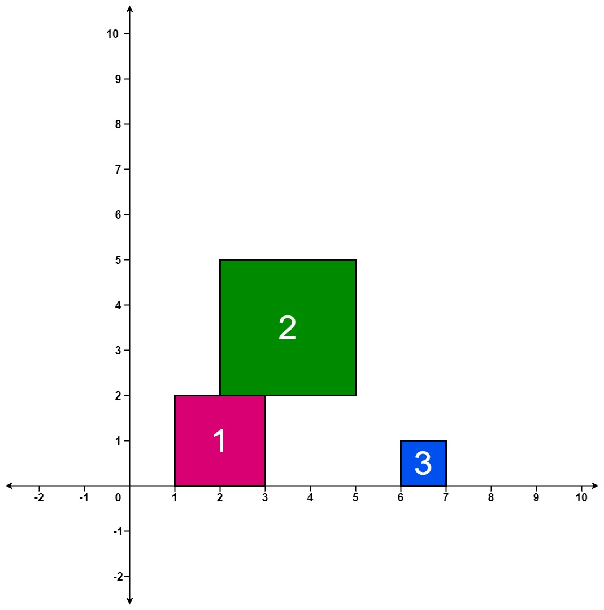

| Category | Difficulty | Likes | Dislikes |
|---|---|---|---|
| Algorithms | Hard | 670 | 76 |
uber | square
There are several squares being dropped onto the X-axis of a 2D plane.
You are given a 2D integer array positions where positions[i] = [lefti, sideLengthi] represents the ith square with a side length of sideLengthi that is dropped with its left edge aligned with X-coordinate lefti.
Each square is dropped one at a time from a height above any landed squares. It then falls downward (negative Y direction) until it either lands on the top side of another square or on the X-axis. A square brushing the left/right side of another square does not count as landing on it. Once it lands, it freezes in place and cannot be moved.
After each square is dropped, you must record the height of the current tallest stack of squares.
Return an integer array ans where ans[i] represents the height described above after dropping the ith square.
Example 1:

Input: positions = [[1,2],[2,3],[6,1]]
Output: [2,5,5]
Explanation:
After the first drop, the tallest stack is square 1 with a height of 2.
After the second drop, the tallest stack is squares 1 and 2 with a height of 5.
After the third drop, the tallest stack is still squares 1 and 2 with a height of 5.
Thus, we return an answer of [2, 5, 5].Example 2:
Input: positions = [[100,100],[200,100]]
Output: [100,100]
Explanation:
After the first drop, the tallest stack is square 1 with a height of 100.
After the second drop, the tallest stack is either square 1 or square 2, both with heights of 100.
Thus, we return an answer of [100, 100].
Note that square 2 only brushes the right side of square 1, which does not count as landing on it.
Constraints:
1 <= positions.length <= 10001 <= lefti <= 1081 <= sideLengthi <= 106